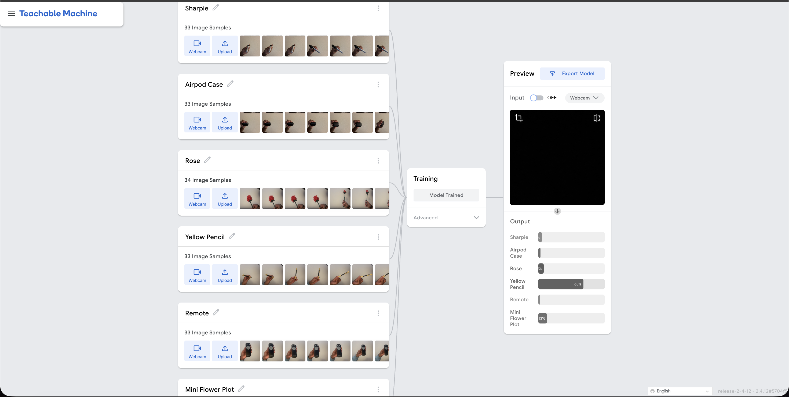
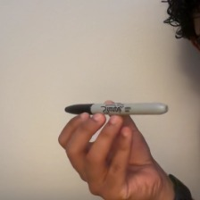
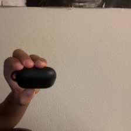
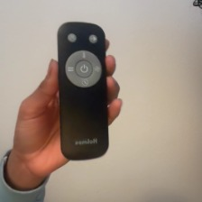
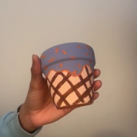

Teachable Machines Project
This page documents our group's machine learning experiment using Google's Teachable Machine, featuring a live demo, our original dataset, and our reflection and experiences during this project.
Live Model Demo
Objects Trained: Rose, Black Sharpie, Black Airpod's Case, Yellow Pencil, Black Remote, and a Mini Flower Pot
Video of Model in Use
Model Screenshot

Links
- Github repository: Open Repository
- Dataset folder: Open Dataset Folder
Group Project Statement




For our project 3, our group used Google Teachable Machine's model training and uploaded it to the cloud so we could use the trained model's link in our LIS 500 project website. On this website continuing from project 2, we added a tab/page for project 3's ML assignment that showcases the webcam feed for a live demo for people to try our trained model, a video of us showing the model working, and a photo of the model training page from Google's Teachable Machine. We used random objects that were around us to keep things unique and random instead of one category, color, or other singular classifiers. We thought the intent of this project might have been to give students a hands on experience of how even a simple ML project can replicate many of the concerns discussed in Buolamwini's "Unmasking AI" writing, especially surrounding data limits, model assumptions, and the idea that AI is automated because they are all automated.
After trying many different objects and changing our approach (will discuss later) we finally decided on these six objects: black sharpie, black airpod case, red rose, black remote, yellow pencil, and a multicolored mini flower pot. Vishnu did the first three objects and Kavya did the last three and we each produced 100 samples by capturing using the webcam, (around 33/34 images per individual classification) totaling 200 samples as specified by the instructions. While initially taking these photos we didn't think much of the background and Vishnu was wearing a black shirt and just used that as a background to take the sample images, we soon realized that was a problem because the model was struggling to detect black objects like the sharpie and airpod case even after being trained. So we decided to delete all samples and moved the camera so we are using a plain white background wall to capture the samples. It seemed to significantly improve the confidence of object detection by our trained model. We organized these samples within a zip folder under our specific names (dataset-vishnu and dataset-kavya).
We thought that the most important part of this project was to not always get an accurate prediction on objects but also to understand how ML works and why the model behaves the way it does in certain scenarios. In our initial runs on the dataset, we noticed incorrect outputs even when we tried moving the object in every angle and lighting and distance to the camera. For instance, dark objects (even after using a white background wall) with similar shapes sometimes had overlapping prediction percentages for the model. The model seemed to become overly sensitive to angle, background, and where our hands were when showing to the webcam. We figured that the model was just learning shortcuts from the given set of context and not from the object itself. This insight led us back to Buolamwini's writing where it was repeatedly mentioned that many AI systems appear objective on paper but are very much so simply pattern matching and very prone to errors due to limited and unbalanced training data.
An important takeaway from "Unmasking AI" is the idea of what or maybe even who the system recognizes well based on the training set. While we specifically used objects instead of faces, we are confident that this problem would exist regardless. This is due to training models using samples from one specific lighting condition, camera distance, and background color/texture, this results in the model performing well only under those conditions and being mediocre outside of them. We didn't think much of this until much later after we finished training our model so we just used the same conditions for the sample images but what we did notice was that when we avoided near duplicate image frames and tried to have diverse images out of the 33/34 samples we got better accuracy. While this seems fine since it was just a mini class project, we believe that taking away from Buolamwini's book's core idea of the necessity for quality and diversity of data are not optional in real world systems as they could have a negative impact on fairness and usability.
Another takeaway from Buolamwini's book that we can connect to our experiences from the project is the idea of coded gaze where human values and blind spots tend to sneak their way into these technological systems. For example, in our project this happened multiple times where we (Vishnu and Kavya) were responsible for deciding which objects mattered, what samples were "good" vs "bad", and if the accuracy was acceptable enough. We also used objects that were available and convenient for us in our environment. Again, while this sounds harmless for a simple class project it reinforces Buolamwini's broader point of designed systems reflecting the perspectives of those that create the systems, this is why diversity within a team is important as it leads to a wide range of perspectives being put into the dataset and model.
Furthermore, we noticed critical problems due to a huge difference between a high confidence percentage and factual correctness. While testing our trained model, we saw scenarios where when objects were blocked with our fingers or held at specific angels we could trick the system into showing a high confidence level for the wrong object. For example, we decided to mess around with the sharpie and remove objects, so when we placed the remote sideways (horizontally) it thought it might be the sharpie at almost a 90%+ confidence level and the remaining being divided between the airpod case and the remote itself. But this would be fixed if we slightly showed the buttons on the remote as they had a gray color which we believe helped the model notice that it was being shown the remote even if the angle might have not been perfect or one we captured in one of our samples. The "Unmasking AI" book warns us in regards to this where we start blindly trusting systems with no questions asked and automating authority because even if systems seem strong and precise they still contain flaws and hence its important then after these systems are embedded into our systems, people are consciously aware of over trusting them.
In conclusion, what we both learned from "Unmasking AI" by Buolamwini and this machine learning project is that the negative impacts that come with AI systems often start all the way at the top where data is collected. In this hands-on project we learned up close how early decisions shaped everything that followed such as the model's learnings and performance. This project was valuable because it broke down big and complex ideas from the readings and our class work from throughout this semester into direct evidence that we can absorb and relate to.